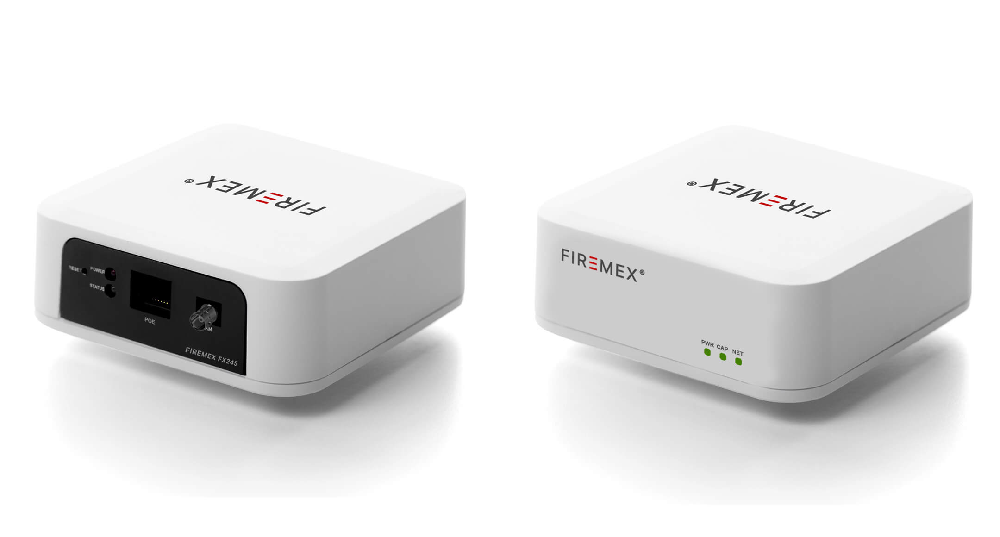
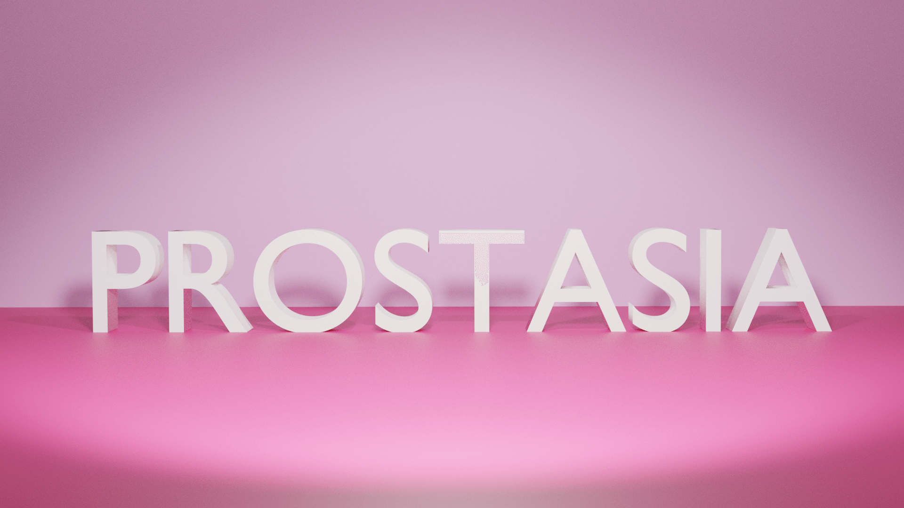

A proctoring platform for mass examinations with optimized resource usage. Consists of web, desktop, and mobile applications implemented using various JavaScript-based frameworks.
Achievements: Best tertiary student project in APICTA 2021 among 1000+ projects from 16 countries. Also won TAD Hack Global 2021(Telnyx), NBQSA, and SLASSCOM awards.
JavaScript
React
Node.js
Electron

A smart CCTV NVR solution with fire detection capabilities. Implemented a Convolutional Neural Network for real-time image analysis with an accuracy of 93%.
Achievements: Won TIGC 2022, TAD Hack SriLanka 2022 and OpenHack 2021.
Python
CNN
Computer Vision
IoT

An AI-based violence, abuse, and rape detection application for women and children. Employed faster R-CNN model as a deep learning algorithm and Mel Frequency Cepstral Coefficients for feature extraction.
Achievements: South East Asia(SEA) finalist of ImagineCup 2021. Won first place in HackAI (AI and ML Hackathon).
Deep Learning
R-CNN
MFCC
Audio Processing
A smart pet feeding solution built with IoT technologies to automate pet feeding schedules and monitor consumption patterns.
IoT
Embedded Systems
Wood Works
Arduino
Zigbee